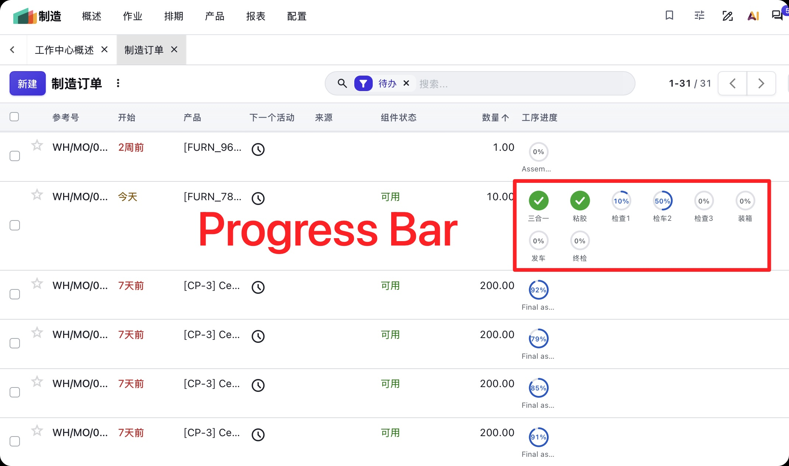
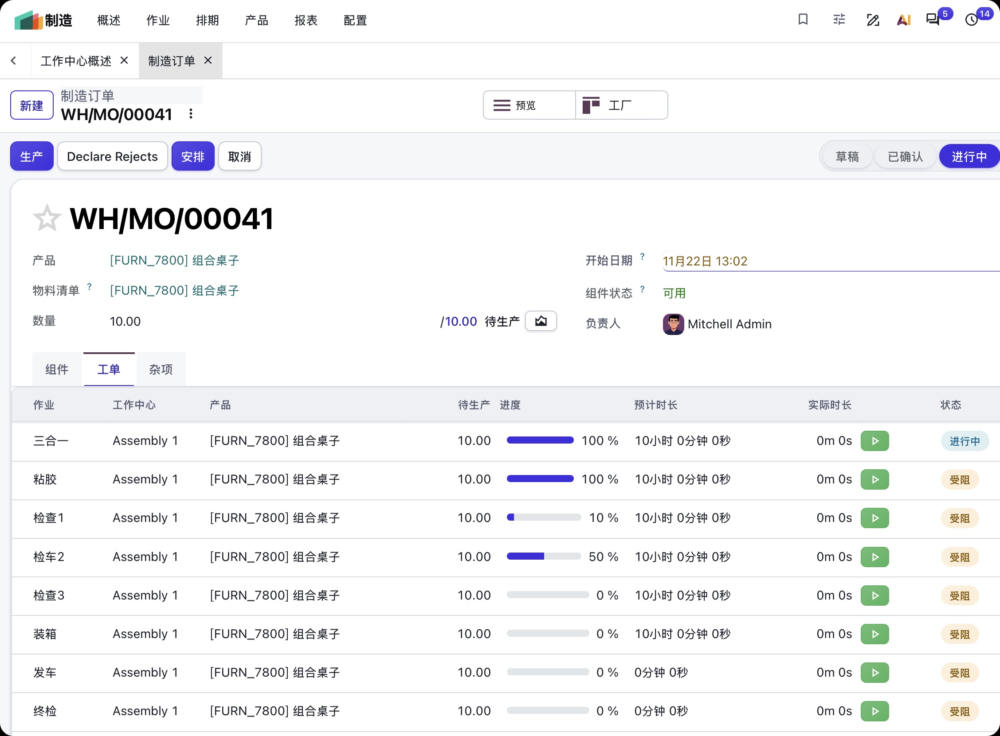

MRP Progress Bar
for Odoo 20
Community & Enterprise
✓ On-premise
✓ Odoo.sh
✗ Odoo Online
Order progress bar · Operation rings · No configuration · 简体中文
See how far every manufacturing order has gone
A progress bar on the order form, a percentage on every work order, and a row of rings in the order
list: one ring per operation, so the shop floor status is readable without opening anything.

Order progress
The order form compares the produced quantity with the quantity to produce, for instance 8 / 12.
Operation progress
Every work order carries its own percentage: produced quantity divided by its quantity to produce.
Rings in the list
One ring per operation, right after the quantity: a blue arc while it runs, a green check when it is done.
Read without clicking
Operation names sit under the rings; hover one to get the exact percentage.
How it works
Three places to look, nothing to set up.
1
Open an orderThe bar sits under the header: it starts at 0 / 12 and fills up as finished moves are validated.2
Check the work ordersEach operation shows its own progress, both as a column in the list and as a row on the form.3
Scan the order listThe ring row after the quantity tells you which operations are done, running, or still waiting.4
Hover a ringThe tooltip repeats the operation name and its percentage, even when the label is truncated.
The manufacturing order
Order level and work order level, both computed from the real quantities.
One bar, two numbers
The form bar reuses the standard progress bar widget with the quantity to produce as its maximum, so it displays produced / total and not just a percentage.
Driven by the finished moves
The produced quantity comes from the validated finished moves of the order: no manual field to maintain, no drift between the bar and the stock.
Every work order
mrp_workorder_progress equals the produced quantity divided by the work order quantity to produce, in percent, capped at 100%.
List and form
The work order progress is added right after Quantity To Produce in the list, and below the quantity line on the work order form.

Each work order shows its own progress, right after the quantity to produce — 100%, 50%, 10% or still 0%.
The rings
In the manufacturing order list, one ring per operation, in the order of the routing.
Running
- a blue arc on a light grey track
- the percentage in blue, inside the ring
- the arc length matches the progress
Done and waiting
- 100%: a solid green disc with a white check
- 0%: a grey ring with a grey 0%
- anything in between: the blue arc
Everything it does
Small additions, no changes to the standard flow.
Order level
Progress bar
Under the header of the form, with the produced and total quantities side by side.
Ring row
In the list, after the quantity: the whole routing at a glance.
Read-only
Both views are computed: nobody can overwrite a progress by typing in it.
No configuration
Install the module and the bar and rings are there; the column can still be hidden like any other.
Operation level
Percentage field
mrp_workorder_progress, computed from the produced and to produce quantities.
List column
Right after To Produce, in both the order's Operations tab and the Work Orders menu.
Form row
Below the produced / to produce line of the work order form.
Capped at 100%
Over-production never draws a ring or a bar past full.
Compatibility
Odoo 20
Built on the Odoo 20 web client: a standard field widget, no theme dependency.
Community & Enterprise
Manufacturing is all it needs; Shop Floor records inherit the same fields.
Translation ready
The labels are translatable and Simplified Chinese ships with the module.
Light footprint
Depends only on mrp: one field, one widget, four view inheritances.
Where it runs
A small add-on on top of Manufacturing: nothing on the stock or accounting side.
| Edition | Order bar | Operation rings | Notes |
| Community |
✓ |
✓ |
Only depends on mrp |
| Enterprise |
✓ |
✓ |
Works with the Shop Floor tablet as well |
| Odoo Online |
✗ |
✗ |
Custom modules cannot be installed |
Getting started
Install
- Copy the module to your addons path.
- Update the apps list and install MRP Progress Bar.
- Reload the browser page.
- Open Manufacturing › Operations › Manufacturing Orders.
Good to know
- After a change to the widget, restart the server or upgrade the module: asset bundles are cached.
- The ring column makes the order rows a bit taller; it can be hidden from the column selector.
- An order without operations simply has an empty ring cell.
MRP Progress Bar — order and operation progress for Odoo 20
Hubin · LGPL-3